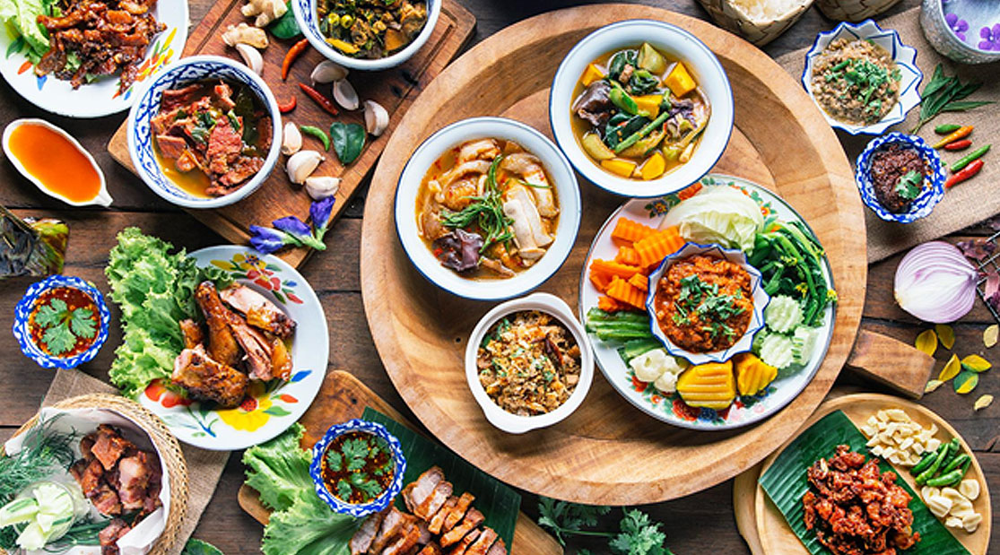

Food Zone - Sanjalika Water Park
|  |
Hungry?
|

Sushi Bar
At Sushi Bar, visitors can sip some cocktail and listen to music and watch Ha Long Bay from up high through glass windows.
See more >

Shopping district
In Sun World Halong Complex, visitors are simply stunned by the diverse shopping services and areas that offer countless gifts and souvenirs that symbolize and wrap...
See more >

Taiyo Restaurant
Located on the third floor of The Mysterious Castle, Taiyo Restaurant is a perfect option if customers want to relish best foods while admiring the scenery of Ha...
See more >

The Dragon Food Temple
“Nested in the Dragon Park, Dragon’s Food Temple is assigned to stunning architecture and can accommodate up to 400 guests. The restaurant offers both menu sets...
See more >

Food Cart
Selling breads, dumplings, sausage, ice cream and a variety of drinks, food carts are a great stop to fuel your energies and keep moving on your exciting rides...
See more >